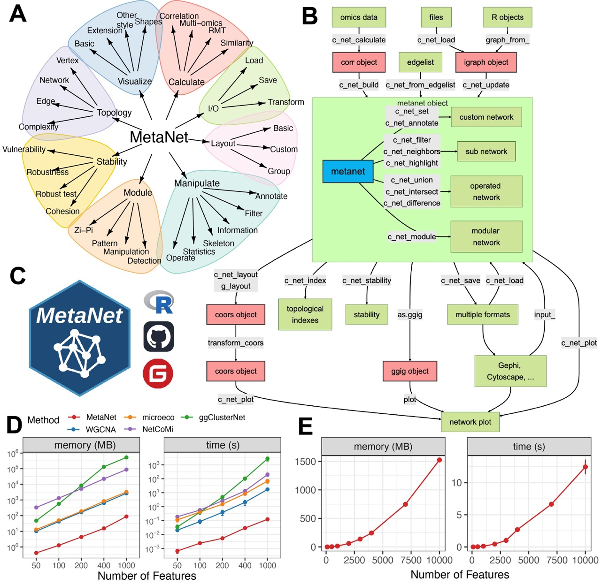
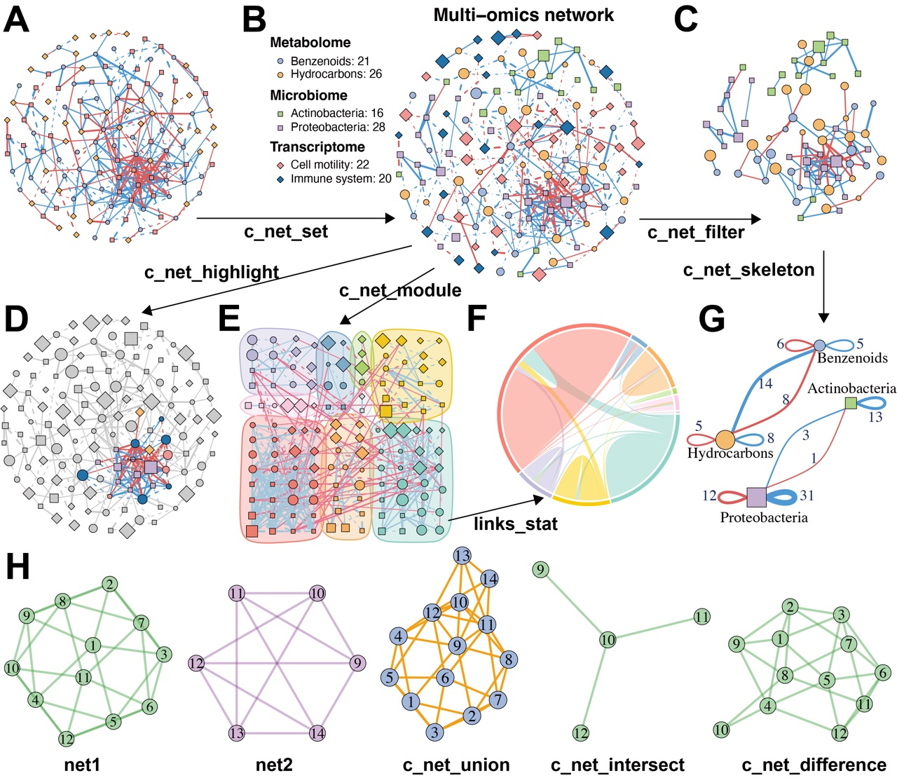
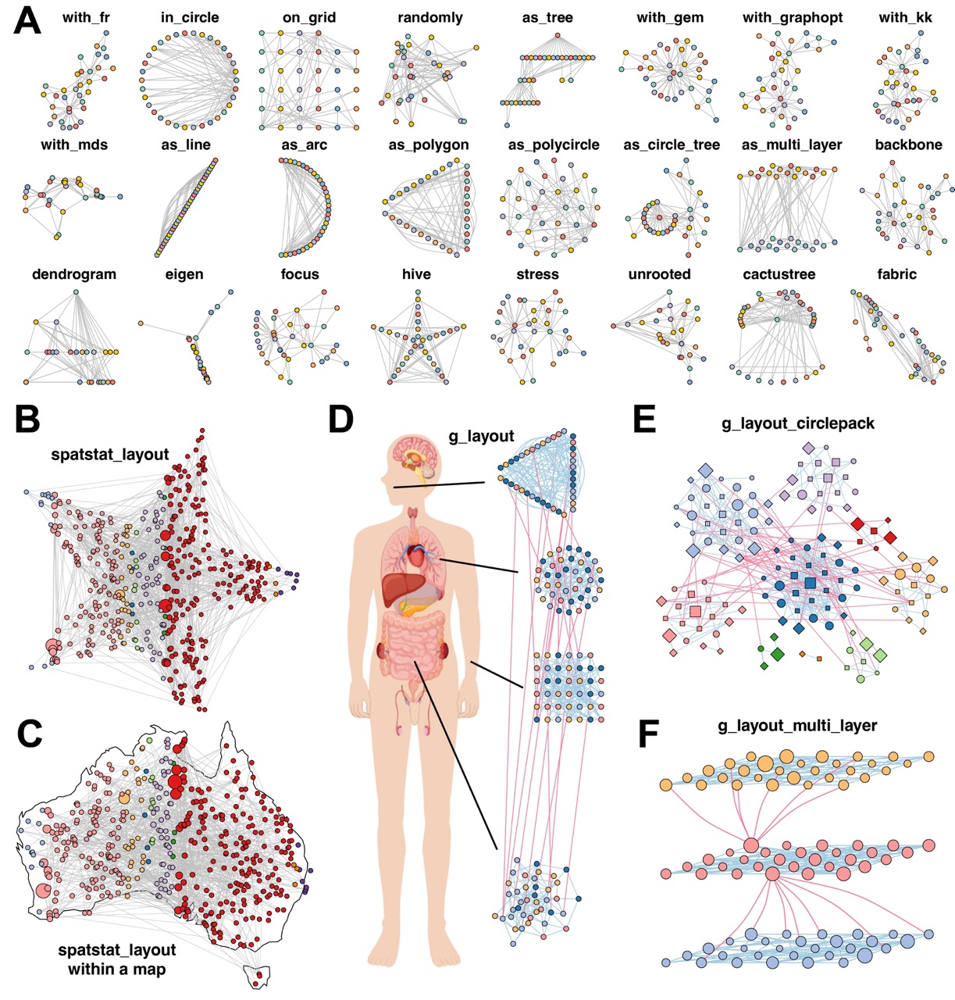

MetaNet: Network analysis for multi-omics
The HTML documentation of the latest version is available at Github page.
Installation
You can install the released version of MetaNet from CRAN with:
install.packages("MetaNet")You can install the development version of MetaNet from GitHub with:
# install.packages("devtools")
devtools::install_github("Asa12138/MetaNet")Workflow overview

Figure 1. Overview of the MetaNet workflow and its high-efficiency computation. (A) Functional modules of MetaNet, visualized using MetaNet itself. (B) Detailed workflow of MetaNet. Green boxes indicate data objects, red boxes represent MetaNet-specific objects, and gray boxes denote core functions. (C) MetaNet logo and its available code repositories and platforms. (D) Line plots comparing memory usage and runtime for correlation-based network construction across different R packages. Error bars represent standard deviation (SD). (E) Line plots showing MetaNet’s performance on increasingly larger datasets in terms of memory usage and runtime. Error bars represent SD.

Figure 2. MetaNet supports flexible and intuitive network manipulation. (A) Initial multi-omics network constructed without annotations. (B) Annotated multi-omics network using the “c_net_set” function. Node shape indicates omics type, color represents omics subtypes, size denotes average abundance, edge color indicates positive or negative correlation, edge type distinguishes intra- and inter-omics connections, and edge width reflects the absolute value of the correlation coefficient. (C) Subnetwork filtered from intra-omics interactions between the Microbiome and Metabolome layers using “c_net_filter”. (D) Highlighted nodes centered on “s__Dongia_mobilis” and its neighbors using “c_net_highlight”. (E) Community detection and modular visualization using “c_net_module”. (F) Chord diagram displaying the proportion of edges between modules. (G) Skeleton network across omics subtypes at a grouped level using “c_net_skeleton”. (H) Operations among networks: “c_net_union” merges net1 and net2, “c_net_intersect” extracts shared nodes and edges, and “c_net_difference” isolates net1-specific nodes and edges. All networks shown are based on simulated data and are for illustrative purposes only.

Figure 3. MetaNet enables diverse and powerful network layout strategies. (A) Application of 24 out of more than 40 built-in layout algorithms from “c_net_layout” on the Zachary Karate Club network. (B) Layout generated within a star using “spatstat_layout”. (C) Layout applied within the map of Australia using “spatstat_layout”. (D) Grouped network layout consisting of four subgroups arranged with “with_fr()”, “on_grid()”, “as_polycircle(3)”, and “as_polygon(3)” within a human-body schematic. All visualization elements were rendered entirely in MetaNet without manual adjustment. (E) Modular network visualized using “g_layout_circlepack”. (F) Three-layer modular structure visualized using “g_layout_multi_layer”. All networks shown are based on simulated data and carry no biological interpretation.
Citation
Please cite:
Chen Peng (2025). MetaNet: A Comprehensive R Package for Network Analysis of Omics Data. R package, https://github.com/Asa12138/MetaNet.
Need helps?
If you have questions/issues, please visit MetaNet homepage first. Your problems are mostly documented. If you think you found a bug, please post on github issue.